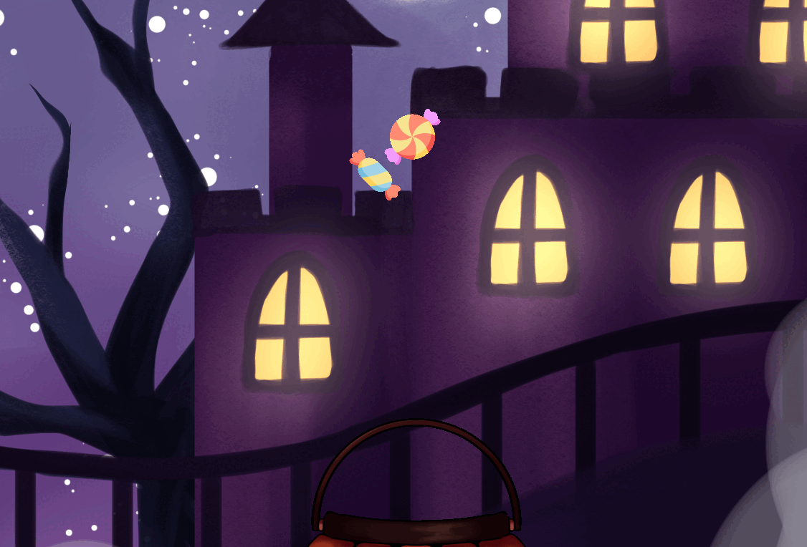
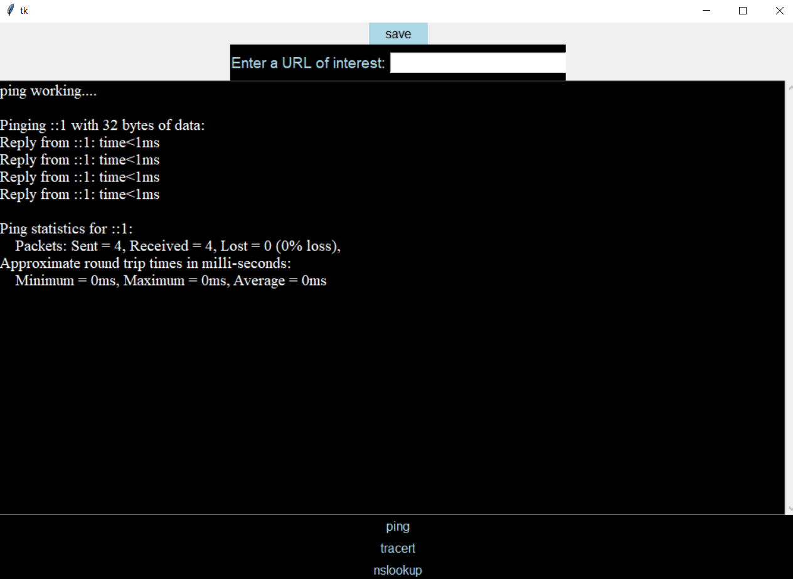

The Magic 8 Ball, when run, pronpts the user for a question, then responds with a yes, no, maybe, or maybe not randomly. After responding, it asks if the user wants to continue, and if they say yes, it repeats the program.

Just Treats no Tricks is a chatching game where you have to catch candy that is good and avoid candy that is bad. If you catch the good candy, the score and timer go up, but catching the bad candy results in the opposite.
The New Year's e-card that we made works by taking the cureent year and the seconds till the new year. Once it has finished the count down, it will write a message using the year that was given and randomly shoots fireword of different shapes, sizes, and colors.
The fish tank was hacked due to careless employees, but after using the debugger and fixing the bugs that the malwear caused, the fish tank has been working normally.
Oh no! You've been marooned on a deserted island! Now you have to collect enough resources to built a boat and escape. But be careful, it can be quite tricky to find where the items are!

This is a GUI that I made using all of the coding knowledge that I've learned in this class thus far. It utilizes different libraries in order to make pressable buttons, add a command line, and even take inputs.